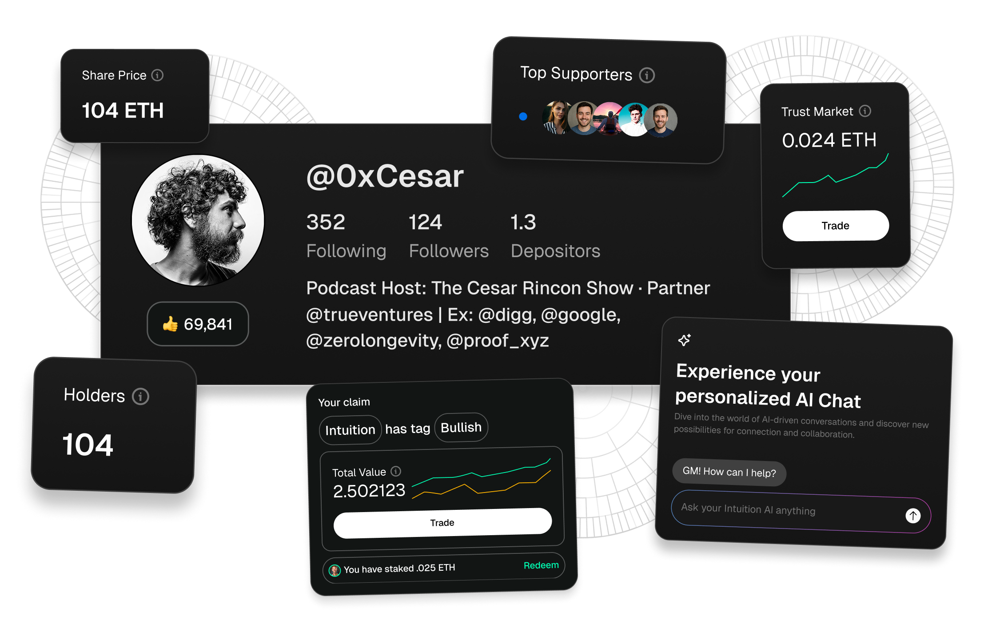
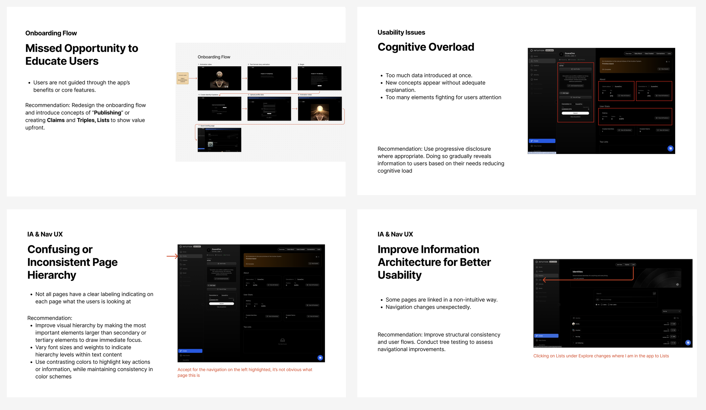
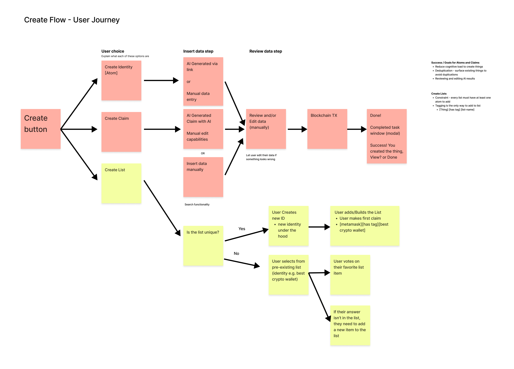
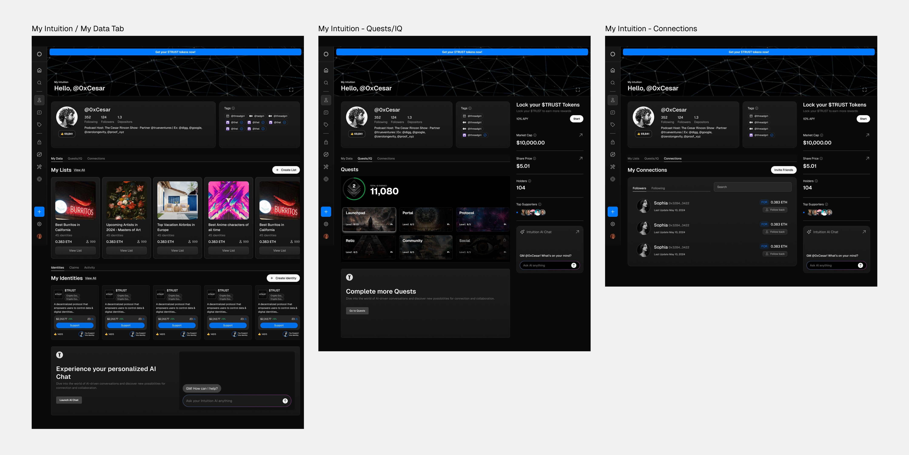
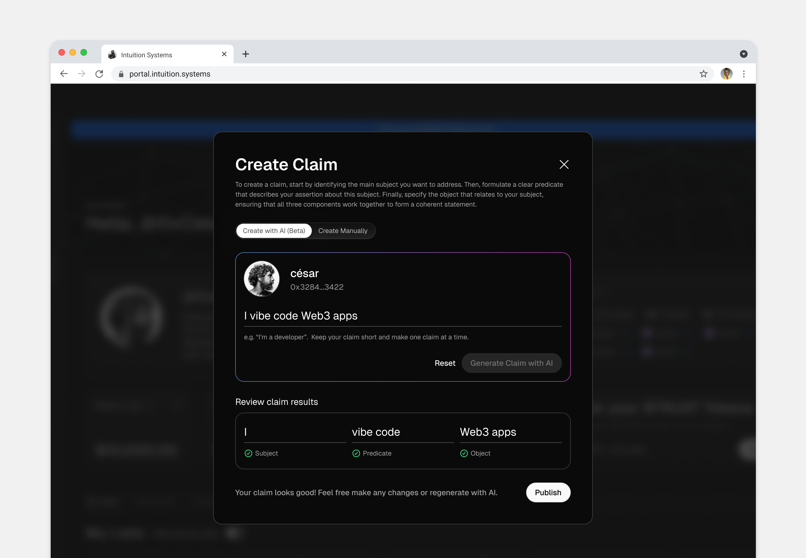
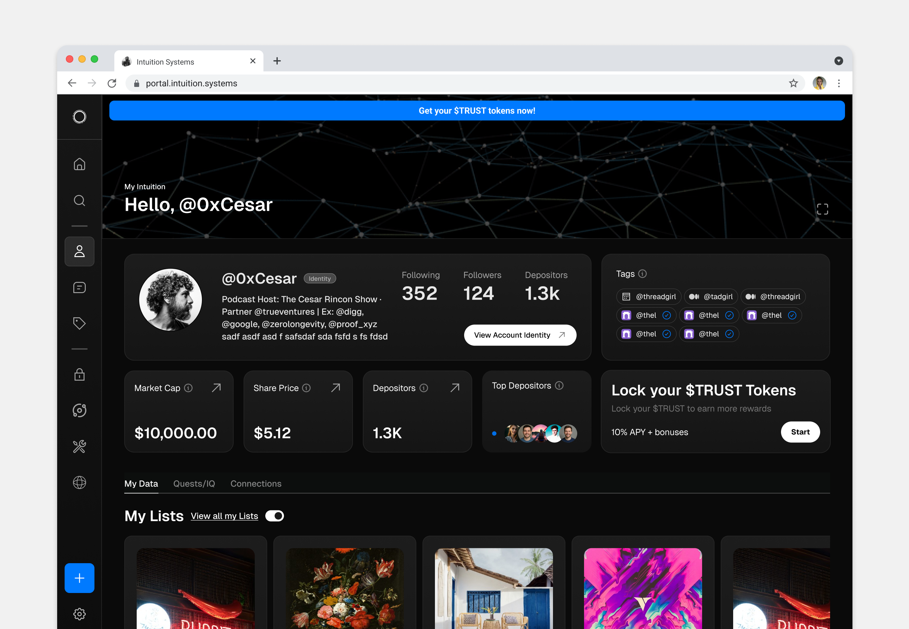

Intuition Systems
A knowledge network where people make claims about anything — ideas, facts, opinions — and the community supports or challenges them by investing in them using crypto.

overview
At the start of 2025, I joined Intuition as Lead Product Designer to help the team unify a series of failed experiments into one flagship product. Their first attempt, Portal, had been confusing, overloaded, and lacked a clear value proposition. With no strategy or roadmap in place, my role was to bring clarity, focus, and design leadership to shape a cohesive experience. The goal was simple: turn scattered ideas into a product users could actually understand and love.
- Role
- Advisor / Lead Product Designer
- Platform
- Web
- Live Site
- intuition.systems ↗





more work
06 case studies, in order